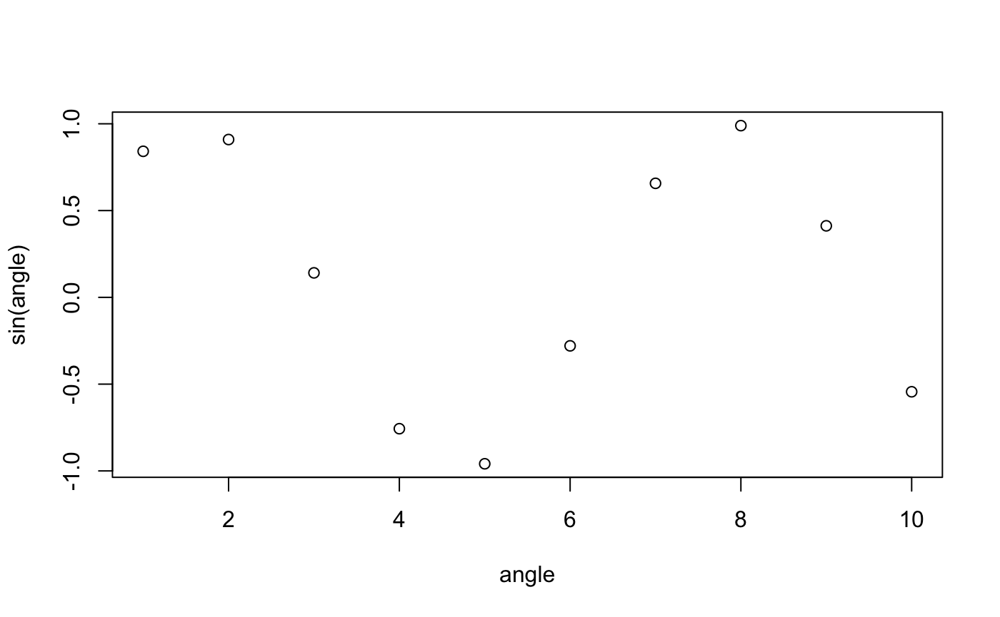

It would be nice if R string-interpolation and quasi-quotation both used the same notation. They are related concepts. So some commonality of notation would actually be clarifying, and help teach the concepts. We will define both of the above terms, and demonstrate the relation between the two concepts.
String-interpolation is the name for substituting value into a string. For example:
## [1] "variable name is \"angle\""Notice the “.(variable)” portion was replaced with the actual variable name “angle”. For string interpolation we are intentionally using the “.()” notation that Thomas Lumley’s picked in 2003 when he introduced quasi-quotation into R (a different concept than string-interpolation, but the topic of our next section).
String interpolation is a common need, and there are many R packages that supply variations of such functionality:
A related idea is “quasi-quotation” which substitutes a value into a general expression. For example:
angle = 1:10 variable_name <- as.name("angle") if(requireNamespace("graphics", quietly = TRUE)) { evalb( plot(x = .(-variable_name), y = sin(.(-variable_name))) ) }
Notice how in the above plot the actual variable name “angle” was substituted into the graphics::plot() arguments, allowing this name to appear on the axis labels.
We can also use strings in place of names by using the .(-) “strip quotes to convert strings to name notation.”
angle = 1:10 variable_string <- "angle" if(requireNamespace("graphics", quietly = TRUE)) { evalb( plot(x = .(-variable_string), y = sin(.(-variable_string))) ) }

evalb() is a very simple function built on top of base::bquote().
All evalb() does is: call bquote() as intended, with the extension that .(-x) is shorthand for .(as.name(x)).
And we see the un-executed code with the substitutions performed.
There are many R quasi-quotation systems including:
If you don’t want to wrap your plot() call in evalb() you can instead pre-adapt the function. Below we create a new function plotb() that is intended as shorthand for eval(bquote(plot(…))).
plotb <- bquote_function(graphics::plot) if(requireNamespace("graphics", quietly = TRUE)) { plotb(x = .(-variable), y = sin(.(-variable))) }
The wrapr dot arrow pipe also uses the bquote-style escape to specify “extra execution”. For example.
f <- function() { sin } # pipe 5 to the value of f() # the .() says to evaluate f() before the # piping 5 %.>% .(f())
## [1] -0.9589243# evaluate "f()"" with . = 5 # not interesting as "f()"" is "dot free" 5 %.>% f()
## function (x) .Primitive("sin")We can annotate any function as “eager eval” as follows.
attr(f, 'dotpipe_eager_eval_function') <- TRUE # now evalutates pipe on f() result. 5 %.>% f()
## [1] -0.9589243